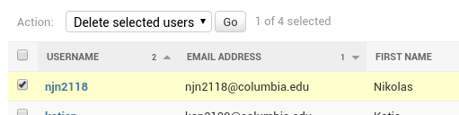
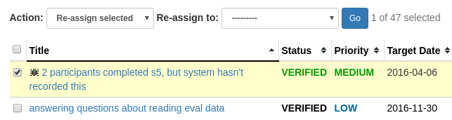

Django's admin interface provides an excellent and well-maintained UI for managing models in your Django database. They've included bulk editing functionality for operating on multiple models at once, like this:
The checkboxes respond to the shift key, and are aware of the top checkbox, which can be used to toggle all selections on or off. We needed something like this in our PMT project for ticket re-assignment, mass milestone changes, etc. There was a lot of subtle UI functionality here that I wanted to use, and didn't want to re-write. Although I didn't find any documentation on how to integrate this into a custom application, I dug around the admin code and decided it wouldn't be so complicated to use Django's front-end code directly. The view I wanted to use this on as a first attempt is pretty simple: a MilestoneDetailView that displays a table of items, similar to Django's user editor shown above.
In order to use Django's JavaScript, the DOM elements needed to be very similar to how those in the Django admin view are laid out. So I copied the DOM, keeping a lot of attributes intact, and then adapted it to my needs. Here are the elements that are displayed above the table:
<div class="actions form-inline">
<label>
Action: <select name="action" required="" class="form-control input-sm">
<option value="" selected="selected">---------</option>
<option value="assign_selected">Re-assign selected</option>
</select>
</label>
<label class="assign-to hidden">
Re-assign to: <select name="assigned_to" class="form-control input-sm">
<option value="" selected="selected">---------</option>
{% for user in object.project.all_personnel_in_project %}
<option value="{{user.username}}">
{% firstof user.fullname user.username %}
</option>
{% endfor %}
</select>
</label>
<button type="submit" class="btn btn-primary btn-sm"
title="Run the selected action">Go</button>
<span class="action-counter help-block"
data-actions-icnt="{{object.item_set.count}}"
style="display: inline;">
0 of {{object.item_set.count}} selected
</span>
</div>
Additionally, the entire table now needs to be surrounded
by a <form method="post"></form>
element for the "Go" button to make a request to
Django. And each table row now needs a checkbox column:
<td class="action-checkbox">
<input class="action-select"
name="_selected_action"
type="checkbox"
value="{{item.pk}}">
</td>
To get the checkboxes working I dug around the Django admin page and searched through JavaScript code to find out how it was being controlled, and included the relevant code on our milestone page:
<script src="/admin/jsi18n/"></script>
<script>
// A modified version of django's admin/js/jquery.init.js
// This is necessary because Django's jquery initializer
// called $.noConflict(), and we need the jQuery global
// variable to be available for other JavaScript on the
// page, like Bootstrap.
var django = django || {};
django.jQuery = jQuery;
</script>
<script src="{% static 'admin/js/actions.js' %}"></script>
Then I needed some custom code for our dropdown box: When 're-assign to' is selected, I want to display the list of possible assignees, and when 'move' is selected, the list of possible milestones.
$('select[name="action"]').change(function(e) {
var selected = $(this).find(':selected')[0].value;
if (selected === 'assign') {
$('.move-to-milestone').addClass('hidden');
$('.assign-to').removeClass('hidden');
} else if (selected === 'move') {
$('.assign-to').addClass('hidden');
$('.move-to-milestone').removeClass('hidden');
} else {
$('.assign-to,.move-to-milestone').addClass('hidden');
}
});
Now the front-end code is taken care of:
The back-end was straightforward and could be handled easily. Out of curiousity, I looked into how Django had written their back-end for their editor, and found out that they've defined their delete action in actions.py. It looks like Django's bulk editor only supports deletion, and they display a delete confirmation page on form submit. I decided not to make a confirmation page, and handling item deletion isn't in our TODO list for the PMT, so it's not like we're doing operations on items that can't be undone.
I did have to write the back-end code myself, but there's nothing really novel about it so I'll just link to our MilestoneDetailView here: views.py#L614. I imagine this could be refactored into a mixin to more easily integrate into other views, which I expect to do when we add this functionality to the PMT's homepage and project pages.